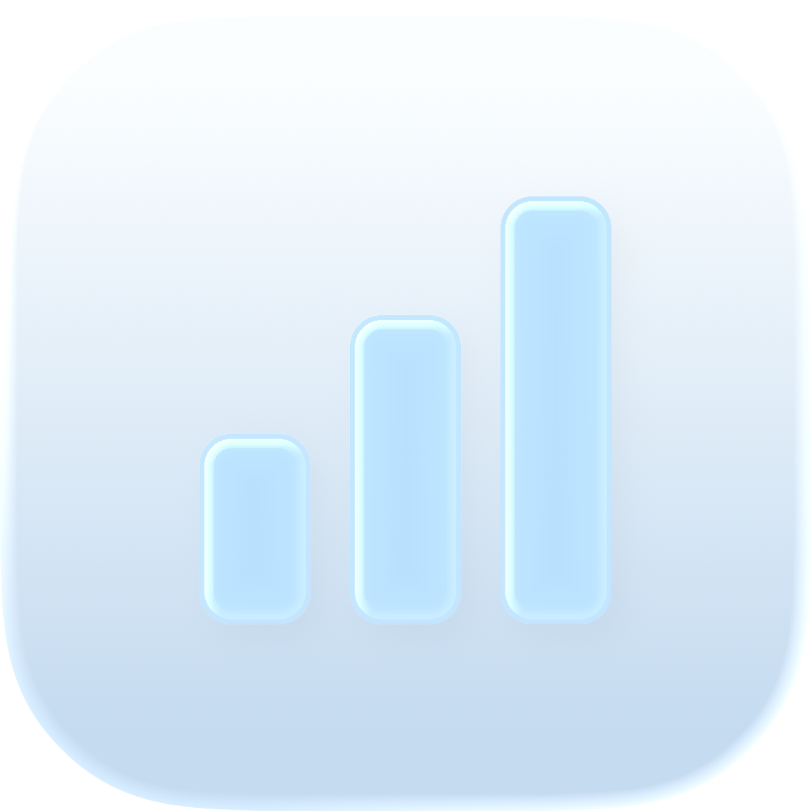

macOS
macOS 14 及以上 · Apple 芯片与 Intel
下载 Mac 版Homebrew 安装
brew install --cask zhangligong0826/tap/codex-ledgerHomebrew 为可选方式，DMG 安装也不需要开发工具。

Codex Ledger本机统计 · 开源 · Mac + Windows
把 Codex 本机日志变成目标账本。看 token、API 成本估算和近 30 天热力图，一键生成分享卡片。
选择你的电脑。Mac Beta.4 尚未 Apple 公证，系统可能拒绝打开；正式签名版需完成 Developer ID 签名和公证。Windows 测试安装包尚未正式签名。
macOS 14 及以上 · Apple 芯片与 Intel
下载 Mac 版brew install --cask zhangligong0826/tap/codex-ledgerHomebrew 为可选方式，DMG 安装也不需要开发工具。
Windows 11 · x64 / ARM64 · 内含运行时
下载 Windows x64 版ARM64 安装包正在手机上查看？请在电脑打开此页，选择对应安装包。可以保存链接，或扫描分享卡片上的二维码。
把项目、对话、轮次归入同一个目标。完成时保存金额，后续工作不改写这笔记录。
提交热力图式的每日活动，配上估算金额和 token，让投入看得见。
卡片默认隐藏名称和路径。复制或保存 PNG 前，先检查预览。
Windows 可能显示发布者或 SmartScreen 提示。按设备的安装策略操作，公司设备可能需要管理员批准。
金额为按标准 API 单价计算的美元估算，不代表订阅扣款或实际账单。未知模型保留为未计价用量，只覆盖本机可读取的日志。
更新说明与校验值 ↗ · 验证记录 ↗